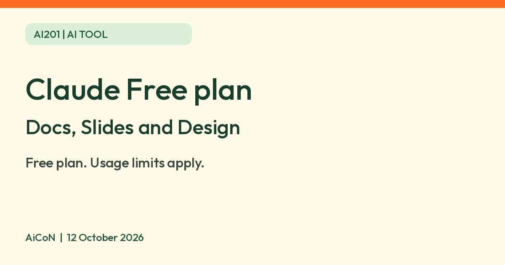

Claude Free plan: make docs, slides and designs and export them, what the limits are
Anthropic says Docs, Slides and Design in Claude are available on every plan, including Free. Decks export to PowerPoint or PDF. Usage limits apply.

What it is
Claude is Anthropic's AI assistant. Anthropic's help center says its Docs, Slides and Design templates for artifacts are available on all plans, including Free, and are on by default for Free, Pro, Max and Team. Enterprise defaults turn on 15 October 2026, with owners able to enable them earlier. You ask Claude for a document, a slide deck or a design, it opens beside the chat, and you can edit it and share it.
Is it free?
Yes, on the Free plan. Claude's pricing page lists Free at Rs 0 ($0) and includes "Create Artifacts" and "Claude Design, Slides, Docs". Not everything is free: Anthropic says Dashboards (beta) is on paid plans, and Motion (beta) is on Team and Enterprise only.
What you can do on Free
- Docs: rich-text documents. Export to Word, PDF, Markdown or Google Docs.
- Slides: decks you can edit and present inside Claude. Export to PowerPoint or PDF, or send to Google Slides as editable files.
- Design: layouts and visuals. Export as .zip, PDF, PowerPoint or standalone HTML.
- Sharing: Anthropic says Free, Pro and Max accounts can share a Doc with anyone who has the link. The person opening it needs a Claude account.
Limits
- Anthropic says Docs and Design count toward the same usage limits as the rest of your Claude use. Longer requests use more. When you hit the limit you wait for the reset.
- The help center does not give a fixed number of decks or documents for Free. We could not verify one.
- Artifacts need "Cloud code execution and file creation" turned on in Settings > Capabilities.
- Anthropic lists known gaps, such as no version history in Design and no comment-only access in Docs.
Privacy
Anthropic's privacy center says it uses your chats to improve its models only if you allow it, if a chat is flagged for safety review, or if you join a program such as its Trusted Tester Program. It says Incognito chats are not used to improve Claude. Separately, thumbs-up/down feedback can include the entire related conversation, can be retained for up to five years, and may be used for model training. Content copied into a chat from connected sources can also be included; raw connector content is excluded under the stated policy. AiCoN advice: check your model improvement setting in Claude's privacy settings before you put personal documents into a deck or doc.
India
India is on Anthropic's supported countries list. We did not sign up or test the Free plan from India.
How to try it
- Sign in at claude.ai with a free account.
- Check Settings > Capabilities for file creation.
- Ask for a deck or doc, or select "Output" in the message box and pick a template.
- Click Export when you are done.
Frequently asked questions
Do I need a paid plan for slides?
Anthropic says Slides is available on every plan, including Free.
Can I open it in PowerPoint?
Anthropic says decks export to PowerPoint and PDF.
Is there a daily cap?
Usage is limited, but the exact Free amount is not published on the pages we read.
What changed since this post?
Official pages rechecked 12 October 2026. Free availability and exports remain as described, with no fixed Free document or deck allowance verified. Clarified the Enterprise default-on exception (15 October), added editable Google Slides export and the feedback-data privacy exception. Docs, Slides and Design were not tested, including from India. Design inside Claude is distinct from the standalone claude.ai/design version, which the help page says closes 14 December 2026.
Sources: What are artifacts, Claude Docs, Claude Design, Claude pricing, Usage and length limits, Privacy center, Supported countries. Checked 12 October 2026.